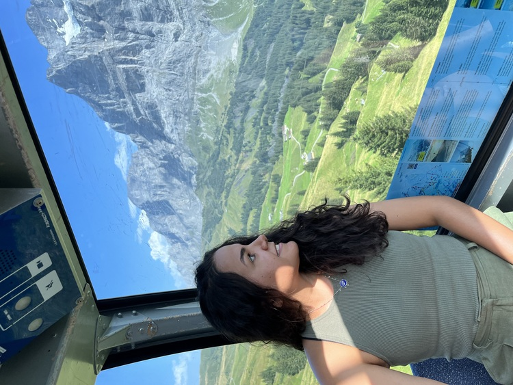

ANA CLARA FONSECA.
Soy una persona motivada con ganas de aprender. Tengo formación en diseño UI y UX, habilidades que pueden aportar mucho en el desarrollo.

Mis Especialidades
Desarrollo Web
Creación de sitios web adaptativos y funcionales.
Figma
Prototipado y diseño profesional de interfaces.
Diseño UI/UX
Experiencia en diseño centrado en el usuario.
WordPress
Desarrollo y personalización de sitios con WordPress.